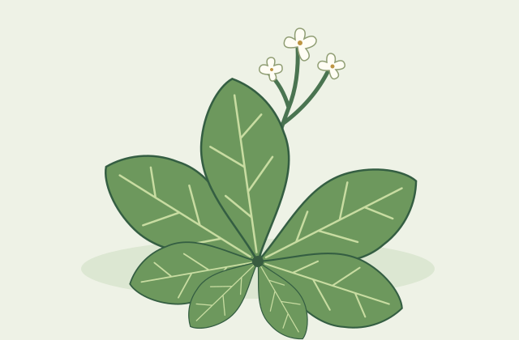
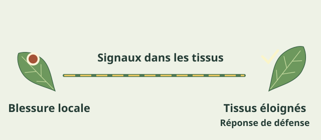
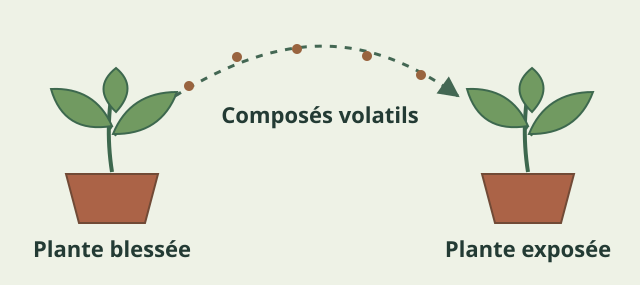
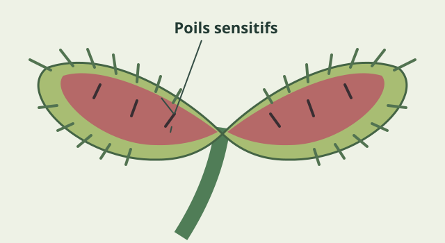
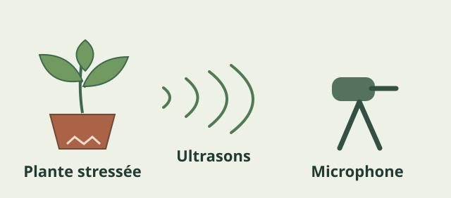
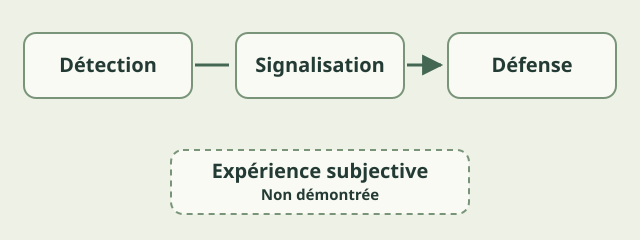

1. Quand une plante est blessée, que se passe-t-il ?
Imaginez une chenille en train de dévorer une feuille. Elle découpe progressivement les tissus, détruit des cellules et poursuit son repas. La plante, elle, ne peut pas prendre la fuite. À première vue, elle ne manifeste aucune réaction.
Pourtant, à l'intérieur de ses tissus, de nombreux phénomènes biologiques peuvent se déclencher.
Des substances sont libérées par les cellules endommagées. Des signaux électriques et chimiques se propagent. Certaines défenses s'activent tandis que des parties encore intactes peuvent se préparer à une nouvelle agression.
Les plantes ne sont donc pas aussi passives que leur immobilité pourrait le laisser penser.
Depuis plusieurs décennies, les biologistes découvrent des mécanismes de perception et de signalisation cellulaire de plus en plus élaborés. Certains permettent aux végétaux de réagir aux blessures, aux insectes herbivores, aux vibrations et même à des substances émises par d'autres plantes.
Ces découvertes suscitent une interrogation fascinante : si une plante détecte une blessure et réagit pour se protéger, cela signifie-t-il qu'elle souffre ?
Pour répondre, il faut distinguer deux phénomènes que nous avons tendance à confondre : réagir à une agression et éprouver consciemment une douleur.
2. Ressentir la douleur : de quoi parle-t-on ?
Dans le langage quotidien, nous associons généralement la douleur à une blessure.
Pourtant, les deux notions ne sont pas équivalentes.
En 2020, l'Association internationale pour l'étude de la douleur (IASP) a actualisé sa définition. Elle caractérise la douleur comme une expérience sensorielle et émotionnelle désagréable associée à une lésion tissulaire réelle ou potentielle, ou ressemblant à celle qui lui serait associée [1].
Le terme essentiel est ici celui d'expérience.
Une blessure constitue un événement physique. La douleur, quant à elle, désigne une expérience subjective, quelque chose qui est ressenti.
Chez les animaux dotés d'un système nerveux, les scientifiques distinguent notamment la nociception de la douleur.
La nociception correspond à des processus nerveux permettant de détecter et de traiter des stimuli potentiellement dommageables. Elle peut participer à des réactions protectrices, mais ne se confond pas avec le ressenti douloureux.
Il serait donc incorrect d'affirmer qu'un organisme souffre simplement parce qu'il réagit à un dommage.
Inversement, l'incapacité à communiquer verbalement ne démontre pas l'absence de douleur.
Les plantes présentent une difficulté supplémentaire : elles ne possèdent pas de système nerveux comparable à celui des animaux. Le terme de nociception, dans son sens neurologique, ne peut donc pas être directement appliqué à leurs mécanismes de signalisation.
La question n'est pas seulement de savoir si les plantes détectent des agressions. Sur ce point, les observations sont nombreuses.
Il s'agit de déterminer si ces mécanismes s'accompagnent d'une expérience subjective.
Or, à ce jour, une telle expérience n'a pas été démontrée chez les végétaux.
3. Des signaux électriques sans système nerveux
Lorsque nous pensons à un signal électrique biologique, nous imaginons généralement un neurone.
Pourtant, les cellules végétales possèdent elles aussi des propriétés électriques.
Leurs membranes maintiennent des différences de potentiel électrique entre le milieu intérieur et le milieu extérieur. Ces différences reposent notamment sur les mouvements d'ions, des particules chargées électriquement.
Une blessure peut modifier ces équilibres et déclencher plusieurs mécanismes de signalisation.
En 2018, une équipe dirigée par Masatsugu Toyota a étudié ces phénomènes chez Arabidopsis thaliana, une petite plante largement utilisée dans les laboratoires [2].
Les chercheurs ont utilisé des plantes exprimant un indicateur fluorescent sensible à la concentration de calcium dans les cellules.

Cette technique leur permettait de visualiser les variations de calcium après une stimulation.
Lorsqu'une feuille était blessée, ils observaient une augmentation du calcium intracellulaire qui se propageait vers d'autres régions de la plante.
Pourquoi le calcium ?
Parce que les ions calcium constituent des messagers essentiels au fonctionnement de nombreuses cellules. Une variation de leur concentration peut participer à l'activation de mécanismes biologiques spécifiques.
L'étude a également mis en évidence le rôle du glutamate, une molécule capable de contribuer au déclenchement de cette signalisation.
Le glutamate intervient aussi dans le fonctionnement du système nerveux des vertébrés, mais cette ressemblance ne doit pas conduire à assimiler les deux systèmes.
Chez les plantes, des canaux membranaires de la famille GLR participent à la transmission des signaux déclenchés par les blessures.
Le résultat le plus important est le suivant : une blessure localisée peut entraîner une réponse dans des tissus éloignés qui n'ont pas eux-mêmes été endommagés.
Une revue scientifique publiée en 2025 par Rui Li et ses collègues rassemble les connaissances sur la propagation des signaux électriques et calciques après blessure [3].
Cette publication de synthèse examine les mécanismes identifiés dans plusieurs expériences et les questions qui restent à résoudre. Elle ne constitue pas une nouvelle démonstration expérimentale du phénomène.
Mais attention : les chercheurs n'ont pas observé la douleur d'une plante. Ils ont mesuré des phénomènes cellulaires.
Ces signaux démontrent une transmission biologique d'informations. Ils ne démontrent pas qu'une sensation est éprouvée.

Expérience 1 · Simulation
Une blessure, une réaction en chaîne
Une chenille attaque une feuille. Découvrez ce qui se passe dans le reste de la plante.
Sélectionnez une feuille.
Les chercheurs utilisent des indicateurs fluorescents pour suivre les variations de calcium dans les cellules.
Une feuille est blessée, mais d'autres parties de la plante peuvent réagir.
Ces réactions sont observées scientifiquement. Elles ne démontrent pas une douleur consciente.
Simulation pédagogique — représentation simplifiée des mécanismes biologiques. Vitesses et couleurs illustratives. Toyota et al., 2018 [2].
Passer l’expérience et reprendre la lecture ↓4. La défense chimique : comment une plante prépare-t-elle sa réponse ?
Détecter une agression n'aurait qu'un intérêt limité sans mécanismes permettant d'y répondre.
Au cours de leur évolution, les végétaux ont développé de nombreuses stratégies de défense face aux herbivores, aux agents pathogènes et aux contraintes environnementales.
Lorsqu'une plante est attaquée par un insecte, certaines voies de signalisation peuvent modifier l'expression de ses gènes.
La production de substances défensives peut augmenter, tandis que d'autres processus physiologiques sont réorganisés.
Parmi les molécules impliquées figure l'acide jasmonique, une hormone végétale participant notamment aux réponses contre les insectes herbivores.
Mais les réactions chimiques ne restent pas toujours confinées à une seule plante.
Lorsqu'ils sont blessés, certains végétaux émettent dans l'atmosphère des composés organiques volatils. Ces substances peuvent influencer les réponses d'autres plantes à proximité.
En 2023, Yuri Aratani et ses collègues ont étudié ce phénomène chez Arabidopsis thaliana [4].
Ils ont exposé des plantes à des substances volatiles émises par des végétaux endommagés et observé leurs réactions grâce à des indicateurs fluorescents sensibles au calcium.
Les chercheurs ont identifié notamment deux molécules : le (Z)-3-hexénal et le (E)-2-hexénal.
Dans leurs conditions expérimentales, ces composés pouvaient provoquer une augmentation du calcium intracellulaire et l'activation de gènes associés aux réponses au stress.
L'étude suggère également que les stomates, de petites ouvertures présentes à la surface des feuilles, participent à l'entrée de certains de ces composés.

Ces résultats sont parfois résumés par une formule spectaculaire : « les plantes avertissent leurs voisines ».
Mais que démontre réellement l'expérience ?
Elle montre que des substances émises par une plante endommagée peuvent être détectées par une autre et provoquer chez cette dernière des réponses biologiques.
Elle ne démontre pas que la plante émettrice cherche volontairement à prévenir ses voisines.
En écologie, on peut parler de communication chimique sans supposer une intention consciente.
Une molécule peut fournir une information utile à un autre organisme sans que celui qui l'émet ait décidé de communiquer.
5. Le toucher : comment les plantes détectent-elles leur environnement ?
Les réactions végétales ne sont pas toujours invisibles.
Certaines plantes modifient leur position ou leur forme en réponse à une stimulation mécanique. La dionée attrape-mouche, Dionaea muscipula, en offre l'un des exemples les plus impressionnants.
Cette plante carnivore possède des feuilles transformées en pièges. À l'intérieur de ceux-ci se trouvent de petits poils sensitifs.
Lorsqu'un insecte les déforme, des signaux électriques peuvent être déclenchés.

Dans les conditions habituelles, la fermeture rapide du piège nécessite généralement deux stimulations efficaces et rapprochées, dans un intervalle d'environ trente secondes.
En 2020, Hiraku Suda et ses collègues ont étudié ce mécanisme grâce à des dionées possédant un indicateur fluorescent du calcium [6].
Leurs observations ont montré qu'une première stimulation pouvait provoquer une augmentation de calcium dans les cellules, puis qu'une seconde stimulation rapprochée pouvait accroître cette concentration jusqu'à un niveau associé à la fermeture du piège.
Les chercheurs proposent ainsi l'existence d'un seuil de calcium lié au déclenchement du mouvement.
Ce seuil constitue une interprétation expérimentale permettant d'expliquer les observations, et non une description définitivement établie de tous les mécanismes responsables de la fermeture.
Lorsque le délai entre les stimulations augmente, le signal calcique initial diminue. Une seconde stimulation peut alors ne plus suffire à déclencher le mouvement.
Cette réaction est parfois décrite comme une forme de mémoire à court terme.
L'expression ne signifie pas que la plante possède un souvenir conscient. Elle indique qu'un événement passé modifie temporairement sa réponse à un nouvel événement.
Une autre étude de 2020, menée par Johannes Burri et ses collègues, a apporté une précision importante [7].
Grâce à un dispositif permettant de contrôler finement la déformation des poils sensitifs, ils ont montré qu'une unique stimulation mécanique pouvait, sous certaines conditions, produire deux potentiels d'action et entraîner la fermeture.
Le fonctionnement du piège dépend donc de la dynamique des stimulations, pas uniquement du nombre de contacts.
Les plantes peuvent également répondre à des vibrations qui ne provoquent pas de mouvement visible.
En 2014, Heidi Appel et Rex Cocroft ont étudié les vibrations causées par des chenilles consommant des feuilles d'Arabidopsis thaliana [5].
Les chercheurs ont d'abord soumis certaines plantes à des vibrations reproduisant celles produites par la mastication.
Lors d'une attaque ultérieure, ces plantes présentaient une augmentation de certaines défenses chimiques par rapport à des plantes témoins.
Les résultats montraient également des réponses différentes selon la nature des vibrations.
Ces découvertes illustrent la capacité des végétaux à réagir à des stimulations mécaniques variées.
Elles ne nécessitent pas de supposer une expérience consciente comparable à celle d'un animal.
Expérience 2 · Trois défis
Arriverez-vous à fermer le piège ?
Découvrez comment une plante carnivore réagit au toucher.
Trois défis pour explorer les poils sensitifs et la fermeture du piège.
Simulation pédagogique — jauge et délais illustratifs, non issus de mesures en temps réel. Le seuil calcique est un modèle expérimental proposé. Suda et al. [6] et Burri et al. [7], 2020.
Passer l’expérience et reprendre la lecture ↓6. Les plantes peuvent-elles émettre des sons ?
En 2023, une étude publiée dans la revue Cell a attiré l'attention sur une autre propriété étonnante des végétaux [8].
Itzhak Khait et ses collègues ont cherché à déterminer si certaines plantes émettaient des sons détectables dans l'air.
Pour cela, ils ont notamment étudié des plants de tomates et de tabac.
Certains étaient privés d'eau, tandis que d'autres subissaient des blessures expérimentales.
À l'aide de microphones adaptés, les chercheurs ont enregistré des émissions ultrasonores : des sons dont la fréquence dépasse la limite habituelle de l'audition humaine.
Les plantes soumises à certains stress produisaient davantage de sons détectables que les témoins.

Les chercheurs ont également utilisé des méthodes d'apprentissage automatique pour distinguer certaines conditions expérimentales à partir des enregistrements.
Ces résultats pourraient contribuer au développement d'outils de surveillance de l'état physiologique des cultures.
Mais ils ont parfois été présentés comme la preuve que les plantes « crient » lorsqu'elles souffrent.
Cette interprétation va beaucoup trop loin.
Les sons enregistrés sont des phénomènes physiques. L'une des hypothèses discutées pour expliquer leur production est la cavitation, liée à la formation ou à la dynamique de bulles de gaz dans les tissus conducteurs d'eau.
Les mécanismes précis de ces émissions restent néanmoins à étudier.
Produire un son ne signifie ni vouloir communiquer ni ressentir une douleur.
Une autre étude, publiée dans sa version définitive le 5 janvier 2026 dans eLife, apporte une nouvelle dimension à cette découverte [9].
Rya Seltzer et ses collègues ont étudié des femelles de Spodoptera littoralis, une espèce de papillon de nuit capable de percevoir certaines fréquences ultrasonores.
Dans une expérience sans plante réelle, les femelles ont davantage pondu près d'une source diffusant des enregistrements de sons associés à des plantes déshydratées que du côté silencieux.
Lorsque de véritables plantes étaient présentes, les préférences observées étaient différentes : les femelles privilégiaient les plantes situées du côté silencieux.
Des expériences complémentaires avec des femelles rendues sourdes ont renforcé l'hypothèse d'un rôle des informations acoustiques.
Ces observations suggèrent que cette espèce de papillon peut exploiter certains indices sonores associés à l'état des plantes.
Après plusieurs étapes d'évaluation et de révision, l'étude a été publiée dans sa version définitive en janvier 2026. L'évaluation scientifique finale publiée par eLife considère que les résultats reposent sur des expériences convaincantes.
Cette appréciation ne permet toutefois pas de généraliser les comportements observés à tous les insectes ni à toutes les situations écologiques.
Les expériences établissent ici que des femelles de Spodoptera littoralis peuvent utiliser des informations acoustiques dans leurs choix de ponte, dans les conditions étudiées.
Les chercheurs considèrent que les ultrasons produits par les plantes constituent probablement des indices acoustiques que certains insectes peuvent exploiter, plutôt que des signaux ayant évolué pour transmettre une information.
Cette distinction est importante : un organisme peut tirer parti d'un phénomène physique sans que ce phénomène ait évolué pour remplir une fonction de communication.
Ces observations ne démontrent ni une communication acoustique intentionnelle chez les plantes ni l'existence d'une douleur consciente.
7. Réagir, est-ce ressentir ? Le débat sur la conscience végétale
Depuis le début de notre enquête, nous avons rencontré des mécanismes biologiques remarquables.

Les plantes peuvent transmettre des signaux électriques, modifier leur chimie, détecter des vibrations et réagir à certaines substances émises dans leur environnement.
Mais que nous apprennent ces découvertes sur leur éventuelle conscience ?
Pour répondre, il faut éviter de confondre plusieurs notions.
La sensibilité biologique désigne ici la capacité d'un organisme à détecter des changements et à y répondre.
La cognition peut être employée, selon les chercheurs, dans un sens plus ou moins large pour désigner des mécanismes de traitement de l'information, d'adaptation ou de mémoire.
La conscience phénoménale, en revanche, correspond à l'existence d'une expérience subjective : le fait qu'il y ait quelque chose à ressentir pour un organisme.
Ces trois notions ne sont pas interchangeables.
Une réponse complexe à l'environnement ne suffit pas à démontrer une expérience consciente.
Le débat est d'autant plus difficile que les plantes ne possèdent pas de cerveau ni de réseaux de neurones comparables à ceux des animaux.
Cela ne constitue pas une démonstration définitive qu'aucune forme d'expérience subjective ne pourrait exister chez elles.
Mais il ne suffit pas non plus d'identifier des ressemblances fonctionnelles entre plantes et animaux pour établir l'existence d'une conscience.
En 2019, Lincoln Taiz et plusieurs collègues ont publié une analyse critique dans Trends in Plant Science [10].
Ils soutiennent que les données disponibles ne justifient pas d'attribuer aux plantes des propriétés telles que la conscience, les émotions ou la douleur subjective.
Leur argumentation repose notamment sur les différences d'organisation entre les mécanismes végétaux et les systèmes nerveux animaux.
Cette publication est un article d'opinion scientifique argumenté. Elle ne constitue pas une expérience démontrant directement l'absence de conscience.
En 2024, le philosophe Mads Jørgensen Hansen a proposé une autre approche du problème [11].
Selon lui, les ressemblances physiologiques ou comportementales mises en avant dans le débat ne suffisent pas à établir la sensibilité consciente des plantes.
Il suggère plutôt de développer des expériences adaptées aux végétaux, capables de mieux distinguer les mécanismes de traitement de l'information qui nécessiteraient une conscience de ceux qui pourraient fonctionner sans elle.
Le débat continue d'évoluer.
En octobre 2026, Sara Torabi et Farid Semsarha ont publié une revue examinant plusieurs théories de la conscience végétale [12].
Les auteurs confrontent notamment des conceptions qui font dépendre la conscience des structures nerveuses, d'autres qui envisagent une origine cellulaire de la conscience et des théories qui la considèrent comme indépendante du cerveau.
Il s'agit d'une comparaison de cadres théoriques, et non d'une expérience apportant des preuves nouvelles de conscience végétale.
Ces approches reposent sur des hypothèses différentes et ne bénéficient pas toutes du même niveau de confirmation empirique.
L'existence d'un débat ne signifie donc pas que toutes les positions sont également soutenues par les observations.
Les expériences présentées dans cet article démontrent des mécanismes de perception, de signalisation et de défense.
En revanche, elles ne montrent pas qu'une plante éprouve une sensation désagréable.
En l'état actuel des connaissances, nous ne disposons d'aucune preuve scientifique convaincante que les plantes ressentent consciemment la douleur.
Cela ne signifie pas que toutes les questions sur la conscience végétale sont définitivement résolues.
Cela signifie qu'il faut distinguer ce que la recherche établit, ce qu'elle permet de supposer et ce qu'elle ne démontre pas.
Expérience 3 · Le laboratoire des preuves
Le laboratoire des preuves
Vous avez découvert plusieurs expériences scientifiques. Saurez-vous distinguer ce que les chercheurs ont observé de ce qu'on imagine parfois à partir de leurs résultats ?
- Observé
- Résultat directement établi par une observation expérimentale.
- Hypothèse
- Explication proposée, encore à confirmer.
- Extrapolation
- Affirmation qui dépasse ce que les preuves disponibles permettent de conclure.
Une hypothèse peut elle aussi être non démontrée. Les catégories distinguent le rôle des affirmations dans le raisonnement scientifique.
Passer l’enquête et reprendre la lecture ↓8. Faut-il changer notre regard sur les végétaux ?
L'absence de preuve de douleur consciente ne rend pas les capacités des plantes moins fascinantes.
Au contraire, leur étude révèle une diversité de mécanismes biologiques que notre expérience humaine nous pousse parfois à sous-estimer.
Nous associons spontanément la transmission d'informations aux neurones, la perception aux organes sensoriels et la mémoire aux souvenirs.
Les plantes montrent que d'autres formes de régulation, de signalisation et d'adaptation sont possibles.
Elles peuvent modifier leur fonctionnement face à une agression, coordonner différentes parties de leur organisme et interagir chimiquement avec leur environnement.
Ces capacités résultent d'une longue histoire évolutive.
Mais une question plus philosophique apparaît : faut-il qu'un organisme souffre pour que nous lui accordions de l'importance ?
Les plantes jouent un rôle essentiel dans le fonctionnement des écosystèmes.
Elles participent à la production de matière organique, aux chaînes alimentaires, au fonctionnement des sols et aux cycles biogéochimiques.
Leur préservation peut donc être justifiée pour des raisons écologiques, scientifiques ou éthiques, indépendamment de l'existence d'une expérience consciente.
Reconnaître leur complexité ne nécessite pas de leur attribuer des émotions ou des intentions humaines.
Cela suppose surtout d'apprendre à comprendre leur fonctionnement propre.
9. Conclusion — Une sensibilité biologique sans douleur démontrée
Alors, les plantes peuvent-elles ressentir la douleur ?
Les recherches scientifiques apportent aujourd'hui une réponse claire sur certains points et prudente sur d'autres.
Oui, les plantes détectent des agressions et y répondent. Elles possèdent des systèmes de signalisation électrique et chimique, réagissent aux stimulations mécaniques et peuvent coordonner leurs défenses à l'échelle de l'organisme.
Ces capacités ont été observées expérimentalement.
En revanche, aucune preuve scientifique convaincante ne permet actuellement d'affirmer qu'elles éprouvent une douleur consciente.
Il serait donc incorrect de confondre une réaction physiologique avec une sensation de souffrance.
Finalement, ces découvertes nous invitent à regarder les végétaux autrement.
Leur intérêt ne tient pas au fait qu'ils nous ressembleraient, mais à leur capacité à fonctionner selon des mécanismes profondément différents des nôtres.
Comprendre les plantes, c'est aussi découvrir que la complexité du vivant ne passe pas nécessairement par un cerveau.
Sources et bibliographie
- Définition de référence International Association for the Study of Pain (IASP), « IASP Announces Revised Definition of Pain », 16 juillet 2020. Consulter la source
Retour au texte · 1 - Étude originale Toyota, M., et al., « Glutamate triggers long-distance, calcium-based plant defense signaling », Science, vol. 361, n° 6407, 2018, p. 1112–1115. Consulter la source
Retour au texte · 1 - Revue scientifique Li, R., et al., « Electrical and calcium signaling in plant systemic defense: from local wounds to global responses », New Phytologist, vol. 247, n° 4, 2025, p. 1633–1642. Consulter la source
Retour au texte · 1 - Étude originale Aratani, Y., et al., « Green leaf volatile sensory calcium transduction in Arabidopsis », Nature Communications, vol. 14, article 6236, 2023. Consulter la source
Retour au texte · 1 - Étude originale Appel, H. M., et Cocroft, R. B., « Plants respond to leaf vibrations caused by insect herbivore chewing », Oecologia, vol. 175, 2014, p. 1257–1266. Consulter la source
Retour au texte · 1 - Étude originale Suda, H., et al., « Calcium dynamics during trap closure visualized in transgenic Venus flytrap », Nature Plants, vol. 6, 2020, p. 1219–1224. Consulter la source
Retour au texte · 1 - Étude originale Burri, J. T., et al., « A single touch can provide sufficient mechanical stimulation to trigger Venus flytrap closure », PLOS Biology, vol. 18, n° 7, 2020, e3000740. Consulter la source
Retour au texte · 1 - Étude originale Khait, I., et al., « Sounds emitted by plants under stress are airborne and informative », Cell, vol. 186, n° 7, 2023, p. 1328–1336.e10. Consulter la source
Retour au texte · 1 - Étude originale Seltzer, R., et al., « Female moths incorporate plant acoustic emissions into their oviposition decision-making process », eLife, vol. 13, RP104700, version définitive du 5 janvier 2026. Consulter la source · Texte intégral, version définitive du 5 janvier 2026 (PDF eLife)
Retour au texte · 1 - Article de perspective Taiz, L., et al., « Plants Neither Possess nor Require Consciousness », Trends in Plant Science, vol. 24, n° 8, 2019, p. 677–687. Consulter la source
Retour au texte · 1 - Analyse philosophique Hansen, M. J., « A critical review of plant sentience: moving beyond traditional approaches », Biology & Philosophy, vol. 39, article 13, 2024. Consulter la source
Retour au texte · 1 - Revue critique Torabi, S., et Semsarha, F., « Exploring Plant Consciousness: A Critical Review of Cellular Basis, Local, and Non-Local Theories », Biosemiotics, publication en ligne du 23 octobre 2026. Consulter la source
Retour au texte · 1